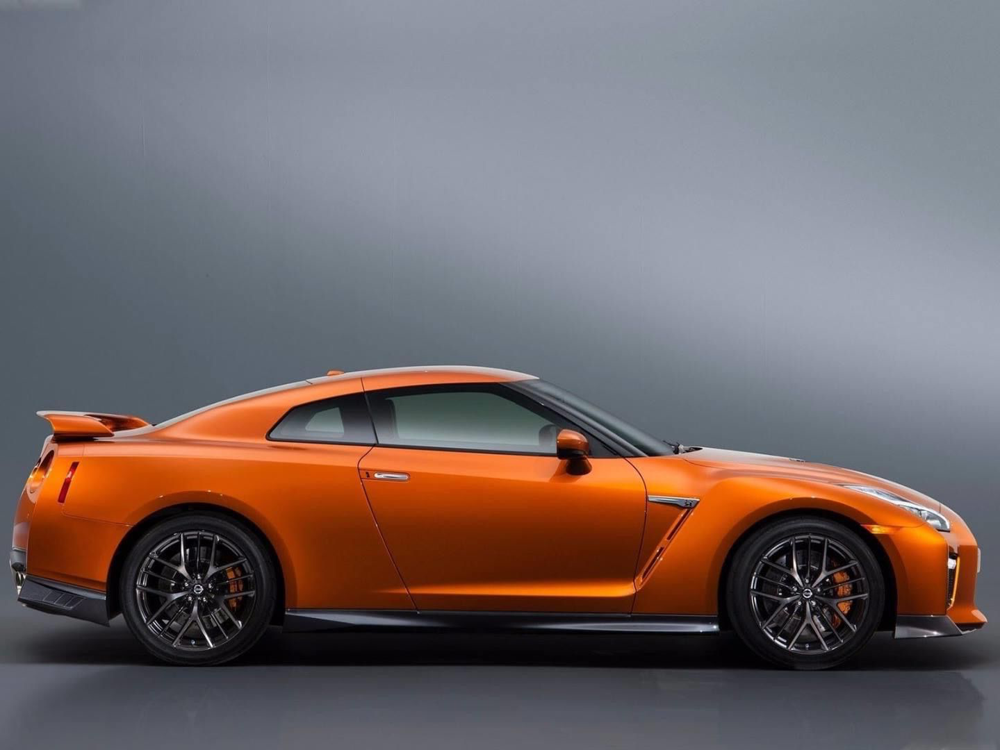
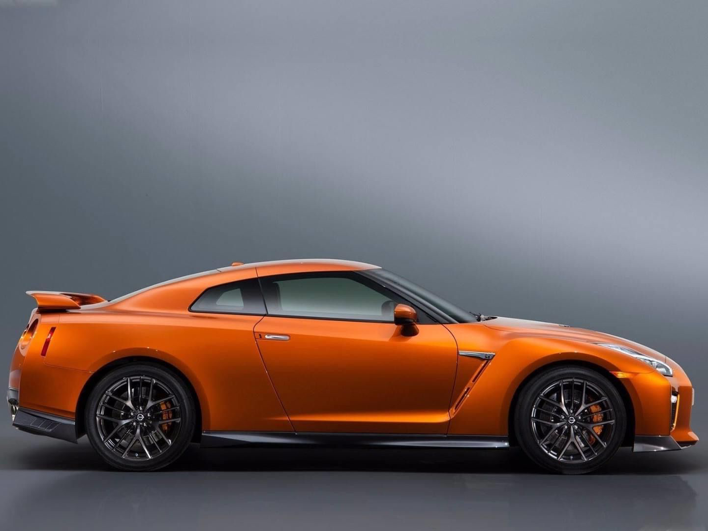
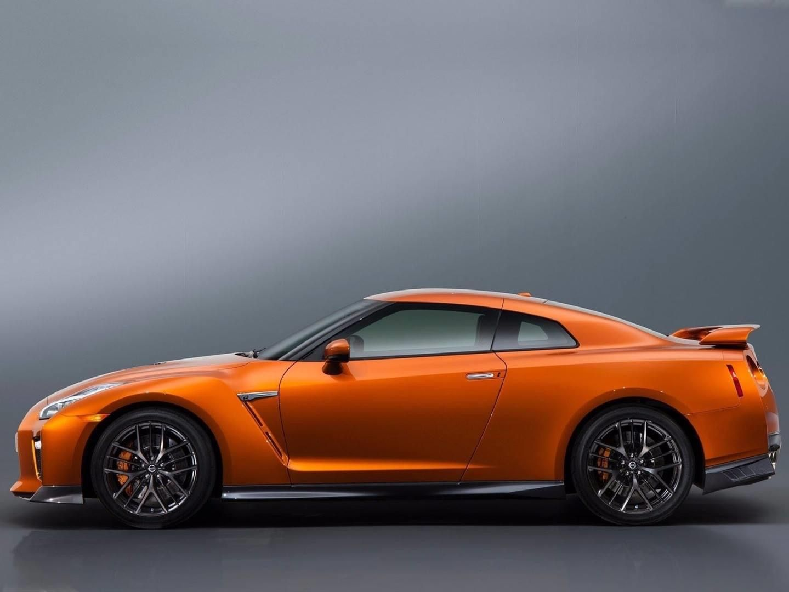
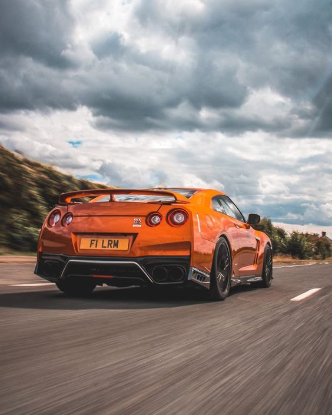
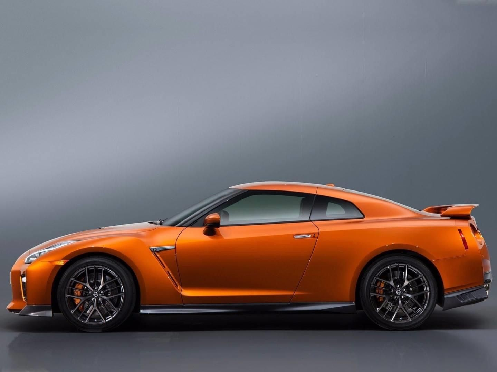
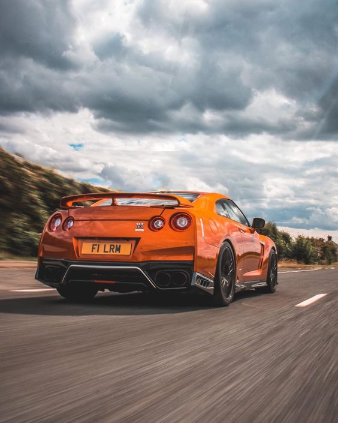
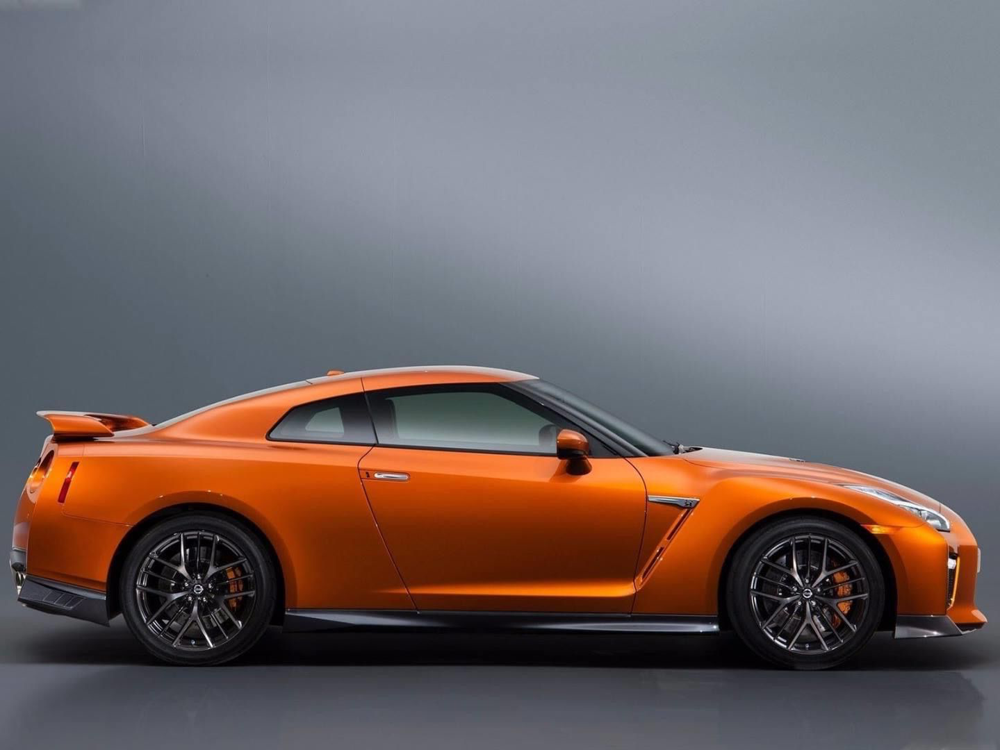
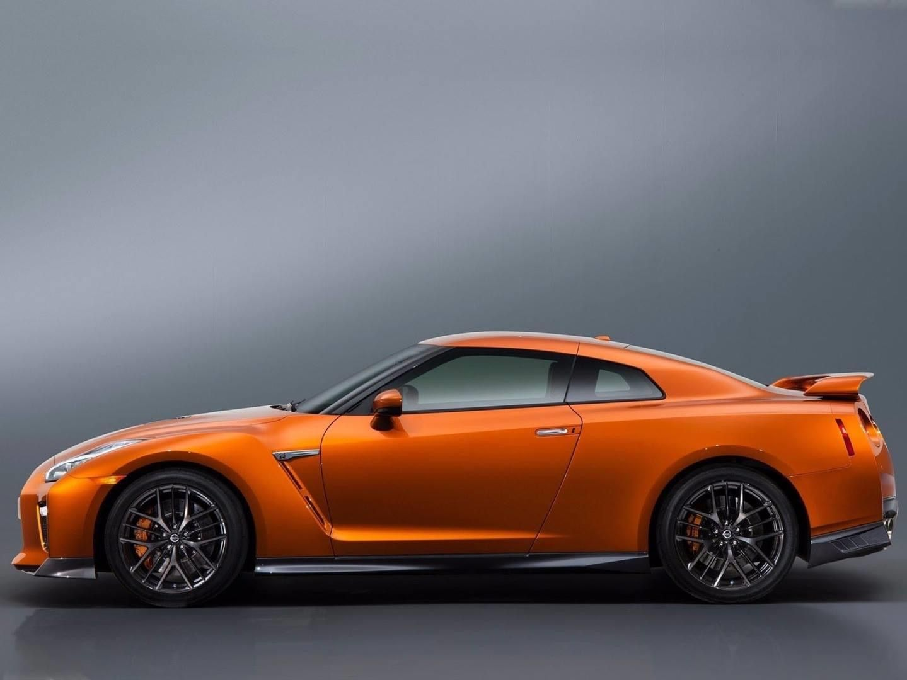
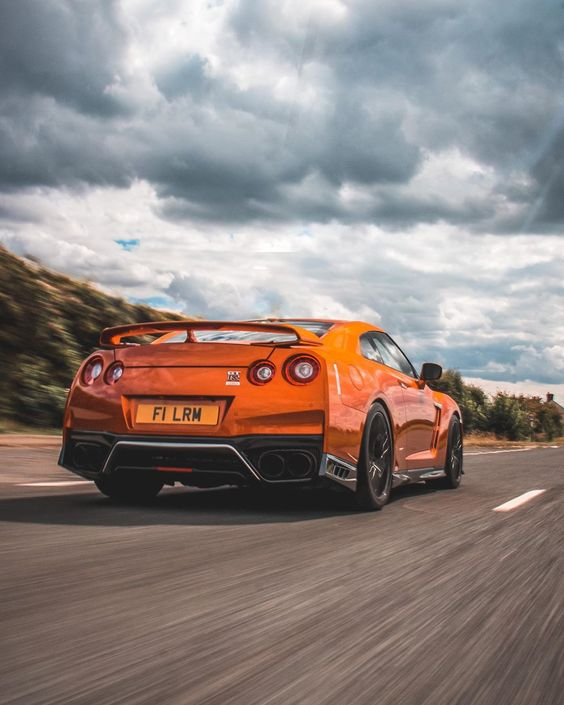

Zdjęcia
 

 



Przegląd
Nissan GT-R to flagowy model marki Nissan, który wzbudza podziw fanów motoryzacji na całym świecie. Ten potężny super samochód łączy w sobie osiągi, styl i innowacyjne technologie, tworząc niezapomniane wrażenia za kierownicą.
Zaprojektowany z myślą o szybkości i aerodynamice, Nissan GT-R prezentuje charakterystyczną sylwetkę z agresywnym przodem i dynamicznymi liniami biegnącymi wzdłuż karoserii. Wykorzystując zaawansowane materiały, GT-R osiąga doskonały balans pomiędzy masą a wytrzymałością.
Pod maską tego potwora kryje się mocny silnik V6, który generuje niesamowite osiągi. Dzięki zastosowaniu zaawansowanych technologii, Nissan GT-R przyspiesza od 0 do 100 km/h w imponująco krótkim czasie. Zawieszenie o regulowanej sztywności i precyzyjny układ kierowniczy gwarantują niesamowitą zwrotność i stabilność nawet przy dużych prędkościach.
Wnętrze Nissan GT-R zostało zaprojektowane z myślą o kierowcy. Zaawansowany kokpit zawiera nowoczesne wyświetlacze i intuicyjny system multimedialny. Komfortowe fotele sportowe z doskonałym podparciem utrzymują kierowcę i pasażerów w idealnej pozycji podczas dynamicznej jazdy.
Nie tylko osiągi są imponujące w Nissan GT-R. Bezpieczeństwo również ma tu priorytet. Zaawansowane systemy kontroli trakcji i stabilności współpracują z potężnymi hamulcami, zapewniając pełną kontrolę nad pojazdem w różnych warunkach.
Nissan GT-R to prawdziwa ikona motoryzacji, łącząca w sobie pasję do prędkości, doskonałą technologię i niepowtarzalny design. To samochód, który z pewnością zostawi niezapomniane wrażenia na drodze i w sercach miłośników samochodów sportowych.
Specyfikacja
Nissan GT-R to wyjątkowy samochód sportowy, który łączy w sobie potężną moc z zaawansowanymi technologiami. Oto kilka kluczowych specyfikacji, które wyróżniają ten model:
Nissan GT-R to prawdziwe dzieło inżynierii, zaprojektowane do osiągania wysokich prędkości, oferujące zarazem komfort i zaawansowane rozwiązania technologiczne.
Niezależnie od wersji, GT-R zawsze dostarcza ekscytującą i satysfakcjonującą jazdę na drodze oraz torze.
Zdjęcia


